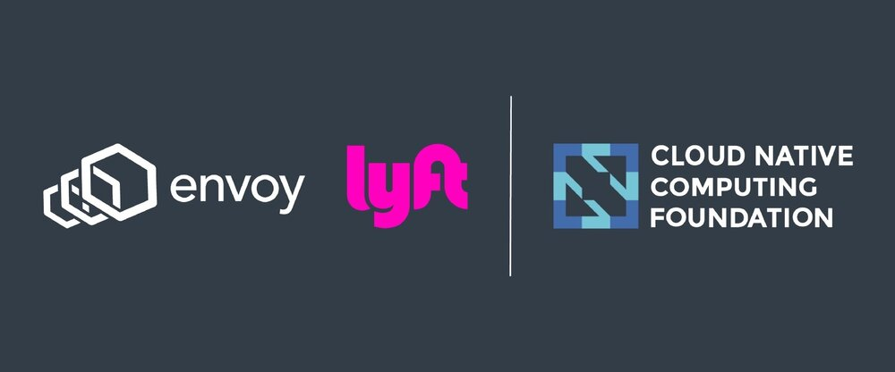
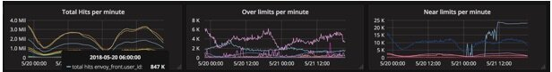
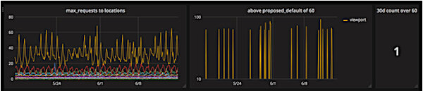
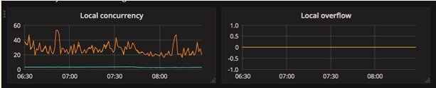
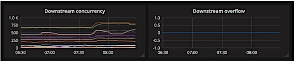

本文为翻译文章，点击查看原文。
关键要点
- 在过去的四年中，Lyft 已从单体架构转变为数百个微服务。随着微服务数量的增加，由于级联故障或意外内部拒绝服务导致的中断次数也在增加。
- 今天，这些故障情况在 Lyft 基础设施中已经基本解决。Lyft 部署的每项服务都通过使用 Envoy 代理自动获得吞吐量和并发保护。
- Envoy 可以作为中间件部署或仅在请求入口处部署，但最大的好处来自于在应用程序本地的入口和出口部署它。在请求的两端部署 Envoy 允许它充当服务器的智能客户端和反向代理。
- 在接下来的几个月里，Lyft 将与 Netflix 的并发限制库背后的团队合作，将基于其库的系统带入 Envoy L7 过滤器。
级联故障是高吞吐量分布式系统中不可用的主要原因之一。在过去的四年中，Lyft 已从单体架构转变为数百种微服务。随着微服务数量的增加，由于级联故障或意外内部拒绝服务导致的中断次数也在增加。今天，这些故障情况在 Lyft 基础设施中基本上已经解决。Lyft 部署的每项服务都会自动获得吞吐量和并发保护。通过对我们最关键的服务进行一些有针对性的配置更改，基于负载的事件减少了 95％，从而影响了用户体验。
在我们检查特定的故障情况和相应的保护机制之前，让我们首先了解如何在 Lyft 部署网络防御。Envoy 是一个 源自 Lyft 的代理， 后来开源并捐赠给 Cloud Native Computing Foundation 。Envoy 与许多其他负载均衡解决方案的区别在于它被设计为以“网格”配置部署。Envoy 可以作为中间件部署或仅在请求入口时部署，但最大的好处来自于在应用程序本地的入口和出口部署它。在请求的两端部署 Envoy 允许它充当服务器的智能客户端和反向代理。在双方，我们可以选择采用速率限制和断路来保护服务器免受各种情况下的过载。
核心概念
并发和速率限制
并发和速率限制是相关的，但不同的概念; 同一枚硬币的两面。在考虑限制系统负载时，运维人员传统上会考虑每秒的请求数。
速率限制可以限制发送到系统的请求的速率。通常进行压力测试以确定服务将变为过载的请求率，然后将限制设置在低于该点的某处。在某些情况下，业务逻辑决定了速率限制。
在硬币的另一面，我们有并发性，即同时使用多少个单元。这些单位可以是请求、连接等。例如，我们可以考虑某个时间点的并发请求数，而不是考虑请求率。当我们考虑并发请求时，我们可以应用排队理论来确定服务在队列开始构建之前可以处理的并发请求数、请求延迟增加以及服务因资源耗尽而失败。
全局与本地决策
Envoy 中的断路器是根据本机信息计算的。每个 Envoy 实例都会跟踪自己的统计数据并制定自己的断路决策。与全局系统相比，该模型具有一些优势。
第一个优势是可以在内存中计算限制，而无需对中央系统进行网络调用。第二个是限制会随着集群的大小而扩展。第三，限制考虑了机器之间的差异，无论它们是否收到不同的查询组合或者在性能上的差异。
常见的故障情况
在引入防御机制之前，了解一些常见的故障模式是有帮助的。
重试放大
依赖开始失败。如果服务执行一次重试所有对该依赖项的请求，则整个调用量将加倍。
资源匮乏
每个服务都受某些资源约束，通常是 CPU、网络或内存。并发请求通常与消耗的资源量直接相关。
从资源匮乏中恢复过来
即使资源消耗增加的原因降低到正常水平，服务也可能因资源争用而无法恢复。
后端减速
依赖项（数据库或其他服务）速度变慢，导致服务花费更长时间来完成请求。
爆发和欠采样
在进行高级容量规划或弹性扩展服务时，通常的做法是考虑整个集群中消耗的平均资源。但是，服务的调用者可以选择同时发送大量请求。这可能会暂时使单个服务器饱和。收集指标时，每分钟或更高的数据几乎肯定会掩盖这些爆发。
现在 Lyft 的一天
我们如何限制速率？
lyft/ratelimit 是一种开源 Go/gRPC 服务，旨在为各种应用程序启用通用速率限制方案。 速率限制适用于域。域的示例可以是每 IP 速率限制，或每秒对数据库的连接数。Ratelimit 在 Lyft 投入生产，每秒处理数十万个速率限制请求。
我们在边缘代理和内部服务网格中使用 Ratelimit。
开源服务是 Envoy 速率限制 API 的参考实现 。Envoy 提供以下集成：
- 网络级别速率限制过滤器 ：Envoy 可以为安装过滤器的侦听器上的每个新连接调用速率限制服务。配置指定特定域和描述符设置为速率限制。这具有限制每秒通过收听者的连接的速率的最终效果。
- HTTP 级别速率限制过滤器 ：Envoy 可以为安装过滤器的侦听器上的每个新请求调用速率限制服务。
在 Lyft，我们主要使用速率限制来抵御基础设施边缘的负载。例如，每个用户 ID 允许的请求率。这样可以保护 Lyft 的服务 免受外部客户端意外或恶意负载造成的 资源匮乏 。
监控
Lyft 的网络团队为所有配置的速率限制提供指标。当服务所有者创建新的速率限制以在边缘、服务之间或数据库中强制执行时，可以立即收集与防御机制有关的数据。

上图是 ratelimit 服务仪表板的一个片段，其中显示了三个面板：
- 每分钟总命中数 ：此面板显示时间序列，其中配置了每个速率限制的总命中数。在此面板中，服务所有者可以随时查看趋势。
- 每分钟超限 ：此面板显示超出配置限制的指标。该面板允许服务所有者拥有可量化的数据，用于返回其服务并评估调用模式，并为高负载事件进行容量规划。
- 每分钟接近限制 ：此面板显示指标何时达到配置限制的 80％。
我们如何管理并发？
Envoy 的主要优点之一是它通过网络级别的断路系统强制执行并发限制，而不必独立地在每个应用程序中配置和实现这些模式。Envoy 支持各种类型的全分布式断路器：
- 最大连接 数：Envoy 将为上游集群中的所有主机建立的最大连接 数。实际上，这通常用于保护 HTTP/1 集群，因为 HTTP/2 可以通过单个连接复用请求，因此限制了减速期间的连接增长。
- 最大挂起请求数 ：等待池中可用连接时将排队的最大请求数。实际上，这仅适用于 HTTP/1集群，因为 HTTP/2 连接池从不对请求进行排队。HTTP/2 请求立即被多路复用。
- 最大请求数 ：在任何给定时间，集群中所有主机可能未完成的最大请求 数。实际上，这主要用于 HTTP/2，因为 HTTP/1 通常每个连接有一个请求。
- 最大活动重试次数 ：在任何给定时间，集群中所有主机可以执行的最大重试次数。通常，我们建议积极地进行断路重试，以便允许重试故障，但整体重试量不会爆炸并导致大规模级联故障。此设置可防止重试放大 。
在 Lyft，我们专注于两种管理服务网格中并发性的机制：
- 限制入口层的并发连接数 。鉴于 Lyft 的每项服务都运行一个 Envoy sidecar 来管理进入服务的入口请求（入口），我们可以配置 sidecar 对应用程序的并发连接数，从而限制入口并发进入应用程序。我们提供合理的值作为默认值，但鼓励服务所有者分析其并发模式并收紧设置。
- 限制出口层的并发请求数 。运行 sidecar 来管理来自服务的出口流量的另一个好处是，我们可以管理从服务（出口）到 Lyft 的任何其他服务的传出并发请求。这意味着“位置”服务的所有者可以有选择地配置他们想要支持 Lyft 的每个其他服务的并发级别，例如，他们可以决定并配置“游乐设施”服务可以向“位置”发出 100 个并发请求“，但”用户“服务只能向”位置“发出 50 个并发请求。
对 Lyft 的每个服务的出口和入口运行并发限制的一个有趣结果是，更容易跟踪不需要的行为。如上所述，所见的常见故障情形是突发性， 由于度量分辨率而可能 难以诊断 。出口和入口的并发限制可以通过查看请求路径中并发溢出的位置，可以轻松查明整个系统的突发行为。
监控
正如我们所提到的，并发并不总是一个直观的概念。为了增强可观察性，网络团队提供了不同的可视化，以便服务所有者可以配置其并发限制，然后监控这些限制如何影响系统。
设置限制

上面的仪表板是一个交互式仪表板，服务所有者可以对 Lyft 的所有服务允许的最大并发请求数量进行试验，以满足其特定服务。在上面的示例中，“位置”服务的所有者可以看到，除“viewport”服务之外，大多数调用服务的60个并发请求的限制就足够了。使用此仪表板，服务所有者可以查看并发配置中的选择性更改在当前网络拓扑中的外观，并可以放心地进行这些更改。
监控限制
如上所述，让 Envoy 作为一个 sidecar 运行，处理来自每个服务的入口和出口流量，允许服务所有者保护他们的服务免受入口并发和出口并发。网络团队自动创建如下所示的仪表板，以帮助服务所有者可视化并发。
入口并发

使用上面的两个面板，服务所有者可以看到从他们的 sidecar Envoy 到他们的服务的并发连接数（使用左边的面板），并查看是否正触发并发限制（使用右侧的面板）。
出口并发

使用上面的两个面板，服务所有者可以在任何时间点（从左侧的面板）可视化从任何服务到其服务的并发请求数。此外，他们可以可视化超出配置限制的服务（使用右侧面板），然后继续使用具体数据解决问题。
有什么缺点？
不幸的是，与任何静态值一样，很难选择名义上的限制。对于速率限制来说是这样的，但对于并发限制尤其如此。必须考虑几个重要因素。并发限制是本地的，必须考虑最大可能的并发性而不是平均值。工程师也不习惯在本地思考，主要考虑请求率而不是并发性。借助一些可视化和统计数据，服务所有者通常可以掌握并发性并选择名义值。
除了难以推断取值之外，Lyft 的一个常见现象就是变化。整个服务网络中每天有数百个部署。对服务及其依赖项的任何更改都可以更改资源和负载配置文件。一旦选择了值，由于这些变化，它可能过时。例如，Lyft 的几乎所有服务都受 CPU 限制。如果 CPU 绑定服务的直接依赖性减慢 25％，则该服务可以处理额外的并发性，因为之前使用 CPU 的空闲请求现在等待网络 I/O 完成将等待一段时间。因此，建议比标称值增加 25% 至 50％。
路线图
短期
Lyft 的网络团队专注于为服务开发人员构建易于使用的系统，以成功配置、操作和调试 Envoy 及相关系统。因此，我们在章程中不仅要设计、实施和部署上面展示的系统，还要为我们的用户提供持续的支持。在 Lyft，基础设施组织的一个主要原则是我们为服务所有者提供的抽象应该是自助服务。这意味着我们需要在记录用例、提供调试工具和提供支持渠道方面投入巨资。
鉴于非直观并发性，网络团队将在短期内围绕此方面投入额外的文档和工程教育。在过去，通过相关系统，我们看到了以下方式的成功：
- 常见问题解答：常见问题列表对于客户来说是非常有用的。此外，它减少了直接回答问题的支持负担（例如，在 Slack 上，通过电子邮件，甚至是亲自回答！）。它允许您轻松地将某人指向某个链接；这种做法比人们反复回答相同的问题要好得多。不过这里可能有个弊端是这些列表可能会变得冗长而难以解析。这可以通过将内容分成分类常见问题解答来解决。
- 选择自己的冒险：服务所有者是主角，他们可以选择冒险的结果。在上面描述的并发空间中，可能会出现几个问题，并且可以修改几个可以解决问题的设置。这意味着这种支持负担非常适合服务所有者可以从他们遇到的问题开始的格式，并导航流程图以获得他们需要分析的指标以获得正确的设置。
文档和工程教育的近期投资缓解了当前并发问题的一个方面：系统的非直观性。但是，他们没有解决其他问题：陈旧性。
更长期
并发限制很容易实施，因为 Envoy 存在于网络的每一跳。但是，正如我们所看到的，限制很难确定，因为它需要服务所有者完全理解系统的所有约束。此外，由于网络拓扑结构的不断发展和弹性，当今的互联网规模公司，尤其是那些处于成长阶段的公司，静态限制迅速增长。
Netflix 在这个问题上投入了大量资金，最近 开源了一个库， 用于衡量或估算网络中每个点的并发限制。更重要的是，随着系统规模和命中限制，系统中每个节点将调整并强制执行其局部极限视图。他们通过将系统的并发约束等同于 TCP 拥塞窗口，借用了常见的 TCP 拥塞控制算法。
Envoy 的设计原则之一包括丰富且功能强大的过滤器堆栈，以提供可扩展性。Envoy 具有 L3/L4（TCP 级别）和 L7（HTTP 级别）过滤器堆栈。可以编写 HTTP 过滤器以对 HTTP 级别消息进行操作。HTTP 过滤器可以停止并继续迭代到后续过滤器。这种丰富的过滤器架构允许复杂的场景，例如运行状况检查处理、调用速率限制服务、缓冲、路由、生成应用程序流量统计数据，如 DynamoDB 等。
在接下来的几个月里，Lyft 将与 Netflix 的并发限制库背后的团队合作，将基于其库的系统带入 Envoy L7 过滤器。这意味着在 Lyft 以及使用 Envoy 的任何其他公司我们将迁移到自动化系统，我们的服务工程师不必静态配置并发限制。这意味着，例如，如果由于意外情况导致服务减速，则自适应限制系统可以自动抑制检测到的限制，从而防止由于不可预见的减速而导致的故障 。一般而言，自适应系统消除了我们过去遇到的两个问题：确定适当的限制是非直观的，并且静态限制在弹性分布式系统中快速增长。
最后的想法
要了解有关 Envoy 断路器实现的更多信息，请参阅 Envoy 文档中的断路器 架构概述。作为一个开源项目，Envoy 对代码贡献持开放态度。我们也欢迎新的想法。即使代码没有到位，也可以随意打开一个建议的断路器改进 issue。在写作本文时尚未实现的能力的一个示例是 基于系统资源的断路 。我们可以在处理入口流量时直接断路，而不是根据 CPU 配置文件逼近并发请求阈值。
虽然断路器可以改善系统在负载下的行为，但重要的是不要忘记可以在系统本身中进行的改进。断路器应被视为故障保护，而不是主要的约束手段。服务所有者应该使用断路器知识来改进自己的代码库。限制有限池的并发性是解决并发问题的最常用方法。如果从同一上下文生成大量请求，则调用者可以选择使用批处理 API。如果批处理 API 不存在，则可能符合接收调用的服务的最佳利益。这些模式往往是教育过程的进一步延伸。在 Lyft，网络团队与其他团队合作，对所有服务进行教育和改进。
关于作者
Jose Nino 是 Lyft 网络团队开发工具和配置的负责人。在近两年的时间里，他一直在 Lyft 工作，Jose 一直在创建系统来扩展 Lyft Envoy 生产环境的配置，以适应日益庞大的部署和工程组织。他曾担任开源 Envoy 维护人员，并培养了 Envoy 不断发展的社区。最近，Jose 继续扩展 Lyft 的网络负载容忍系统。何塞在几个场地谈到了 Envoy 和其他相关话题，最近一次是在 Kubecon EU 2018。
Daniel Hochman 是 Lyft 的高级基础设施工程师。他热衷于扩展创新产品和流程，以改善公司内外的生活质量。在 Lyft 工作期间，他成功地指导了平台产品和组织发展的爆炸式增长。他编写了吞吐量最高的微服务之一，并介绍了几种关键存储技术。Daniel 目前负责 Lyft 的交通网络，并负责在内部和边缘扩展 Lyft 的网络基础设施。